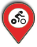
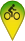

<!DOCTYPE>
<html>
  <head>
    <title>Li bia velo</title>
    <meta name="viewport" content="width=device-width, initial-scale=1.0, maximum-scale=1.0, user-scalable=no" />
    <script src="jquery-1.10.2.min.js"></script>
    <link rel="stylesheet" type="text/css" href="leaflet.css" />
    <!--[if lte IE 8]><link rel="stylesheet" href="leaflet.ie.css" /><![endif]-->
    <style type="text/css">
      body, #map{
        margin: 0px;
        height: 100%;
        width: 100%;
        font: 10pt "Helvetica Neue", Arial, Helvetica, sans-serif;
      }
      .info {
        padding: 6px 8px;
        font: 14px/16px Arial, Helvetica, sans-serif;
        background: white;
        background: rgba(255,255,255,1);
        box-shadow: 0 0 15px rgba(0,0,0,0.2);
        border-radius: 5px;
        text-align: right;
      }
      .info h4 {
        margin: 0 0 5px;
        color: #555;
      }
      .legend {
        text-align: left;
        line-height: 18px;
        color: #555;
      }
      .legend p {
        font-size: 1.1em;
        font-weight: bold;
      }
      .legend h4 + p {
        border-bottom:1px solid #ddd;
        padding-bottom: 15px;
      }
      .legend img {
        height:20px;
        margin-right:6px;
        margin-left: 20px;
      }
      .legend p img:first-child{
        margin-left: 0;
      }
      .leaflet-control-layers, .legend {
        width:260px;
      }
    </style>
  </head>
  <body>
    <div id="map"></div>
    <script type="text/javascript" src="leaflet.js"></script>
    <script type="text/javascript">
      // Init the map
      var map = L.map('map').setView([50.4647, 4.8670], 15);
      // Set a 'fond de plan'
      L.tileLayer('http://{s}.tile.osm.org/{z}/{x}/{y}.png', {
          attribution: 'Map data &copy; <a href="http://openstreetmap.org">OpenStreetMap</a> contributors, <a href="http://creativecommons.org/licenses/by-sa/2.0/">CC-BY-SA</a>, Imagery &copy; <a href="http://mapbox.com">Mapbox</a>',
          maxZoom: 18
      }).addTo(map);
      // Set custom markers
      var redMarker = L.icon({
          iconUrl: 'images/marker-icon-bike-orange.png',
          shadowUrl: 'images/marker-shadow.png',
          iconAnchor: [16, 37],
          popupAnchor: [-4, -30]
      });
      var yellowMarker = L.icon({
          iconUrl: 'images/marker-icon-bike-yellow.png',
          shadowUrl: 'images/marker-shadow.png',
          iconAnchor: [16, 37],
          popupAnchor: [-4, -30]
      });
      var greenMarker = L.icon({
          iconUrl: 'images/marker-icon-bike-green.png',
          shadowUrl: 'images/marker-shadow.png',
          iconAnchor: [16, 37],
          popupAnchor: [-4, -30]
      });
      var nobikeMarker = L.icon({
          iconUrl: 'images/marker-icon-bike-red.png',
          shadowUrl: 'images/marker-shadow.png',
          iconAnchor: [16, 37],
          popupAnchor: [-4, -30]
      });
      var closedMarker = L.icon({
          iconUrl: 'images/marker-icon-bike-grey.png',
          shadowUrl: 'images/marker-shadow.png',
          iconAnchor: [16, 37],
          popupAnchor: [-4, -30]
       });
      // Get GeoJSON
      var url =  "https://api.jcdecaux.com/vls/v1/stations?contract=Namur&apiKey=c4b3e0938b46773e7678fe3f64b5fe2e1f40f32a";
      // WFS layer and Li bia velo statijons
      function onEachFeature(feature, layer) {
          var stationAddress =  feature.properties.address;
          var lastUpdate = new Date(feature.properties.last_update).toLocaleString();
          var popupContent = '<h3>' + feature.properties.name + '</h3>';
          if (feature.properties && feature.properties.name) {
              popupContent += '<p>' + stationAddress + '</p>';
              popupContent += '<p><strong>V&eacute;los disponibles : ' + feature.properties.available_bikes+ '</strong><br />';
              popupContent += 'Points d\'attache disponibles : ' + feature.properties.available_bike_stands +'<br />';
              popupContent += 'Nombre total de points d\'attache : ' + feature.properties.bike_stands +'</p>';
              popupContent += '<p><em>Derni&egrave;re mise &agrave; jour : ' + lastUpdate + '</em></p>';
           }
           layer.bindPopup(popupContent);
      }; //end featureparse 
  
      var stations = new L.GeoJSON([], {
          onEachFeature: onEachFeature,
          pointToLayer: function (e, latlng) {
              if (e.properties.status === "CLOSED") {
                  return L.marker(latlng, {icon: closedMarker});
              } else {
                  if (e.properties.available_bikes == 0) {
                      return L.marker(latlng, {icon: nobikeMarker});
                  }
                  if ((e.properties.available_bikes >= 1) && (e.properties.available_bikes <= 5)) {
                      return L.marker(latlng, {icon: redMarker});
                  }
                  if ((e.properties.available_bikes > 5) && (e.properties.available_bikes < 15)) {
                      return L.marker(latlng, {icon: yellowMarker});
                  }
                  else {
                      return L.marker(latlng, {icon: greenMarker});
                  }
              }
          }
      }); 
      $.getJSON(url, function(data){
          $.each(data, function(i,f){
              f.properties = {
                  name: f.name, 
                  address: f.address, 
                  lat:f.position.lat, 
                  lng: f.position.lng,
                  status: f.status,
                  available_bikes: f.available_bikes,
                  available_bike_stands: f.available_bike_stands,
                  bike_stands: f.bike_stands,
                  last_update: f.last_update
                  };
              f.type = "Feature";
              f.geometry = {type: "Point", coordinates: [f.position.lng, f.position.lat]};
              stations.addData(f);
          });
      });
map.addLayer(stations).attributionControl.addAttribution('Li bia velo data &copy; <a href="https://developer.jcdecaux.com" target="_blank">JCDecaux</a> - Bicycle icon designed by <a href="http://www.thenounproject.com/Askvictor" target="_blank">Andrew Jones</a> from the <a href="http://www.thenounproject.com" target="_blank">Noun Project</a> - BIG THANKS TO <a href="https://github.com/dbutaye" target="_blank">CHOEKE</a> FOR THE REST!');
      // Set a legend
      var info = L.control({position: 'bottomright'});
      info.onAdd = function (map) {
          this._div = L.DomUtil.create('div', 'info legend');
          this.update();
          return this._div;
       };
      info.update = function (props) {
          this._div.innerHTML = '<h4>V&Eacute;LO(S) DISPONIBLE(S)</h4><p>01 - 56 - 15+ 15</p><p>station ferm&eacute;e</p>';
      };
      info.addTo(map);
    </script>
  </body>
</html>
